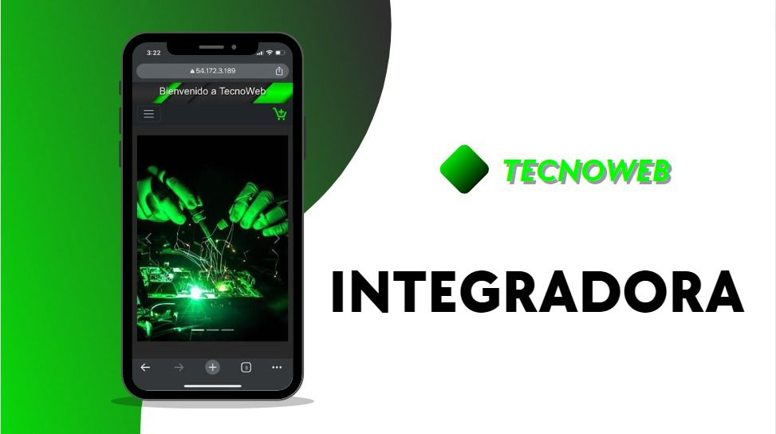
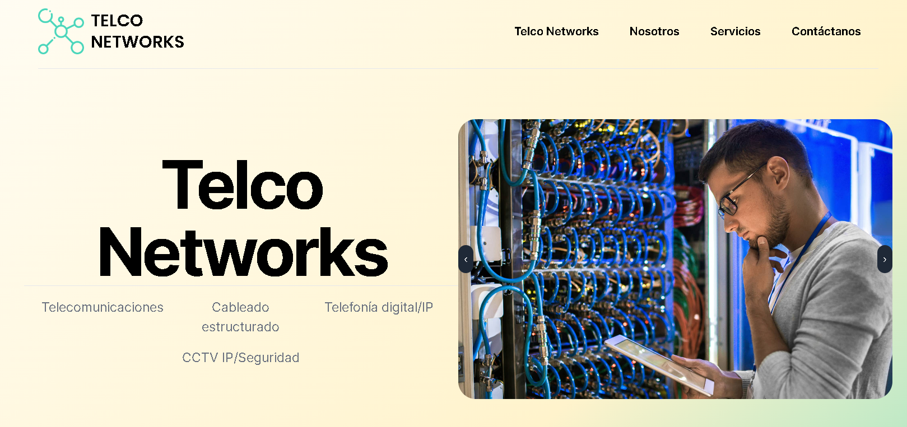
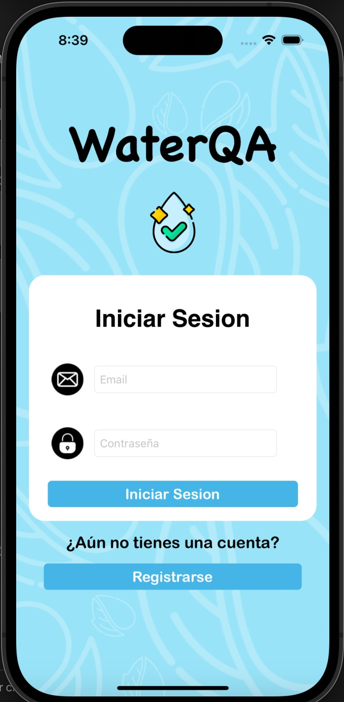
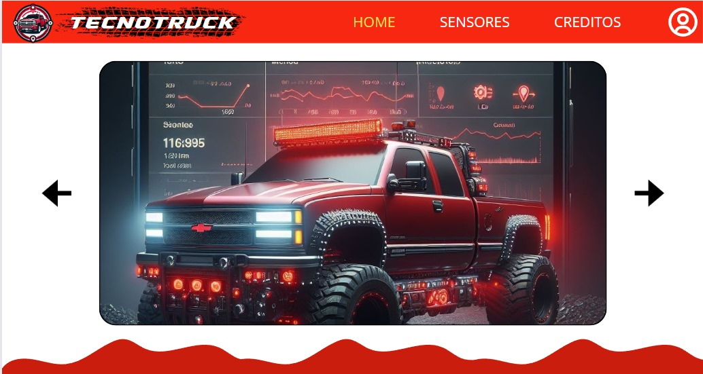

Es una pagina web desarrollada para el local Tecnoweb donde se implemento un sistema para reparacion de celulares , se incluyeron los modulos de cotizacion de reparaciones , apartado de citas y vista de el catalogo que se tiene en la pagina y se subio este proyecto a la nube con AWS
Visitar repositorioConoce nuestros proyectos

Tecno Web

Telco Networks
Telco Networks es una empresa líder en soluciones de telecomunicaciones. Ofrecen servicios de conectividad de Internet, telefonía IP, redes, servicios en la nube y consultoría personalizada. Fuimos les encargados de crear su pagina Landing page y subirla a la red con su dominio y hosting.
Visitar pagina web


Tecno Truck
Es un vehículo de control remoto, constituye una reducida réplica de los automóviles empleados en el ámbito minero. Este vehículo a control remoto se distingue por la integración de seis sensores distintos, diseñados con el propósito de facilitar la operación y la presentación de datos recopilados durante su manejo. Dichos datos se despliegan en una aplicacion de android, brindando una representación detallada a través de una lista de información.
Ver mas